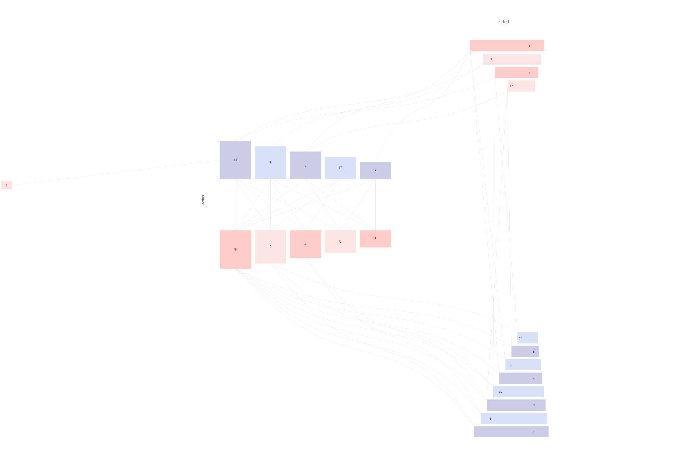

|  |
Sorensen, A. E. (1981). Interactions between birds and fruit in a temperate woodland. Oecologia 50: 242-249. Wytham wood, Oxford |
|
| Seed |
| 1 Columba palumbus | | 2 Cyanistes caeruleus | | 3 Erithacus rubecula | | 4 Fringilla coelebs | | 5 Parus major | | 6 Poecile sp1 | | 7 Pyrrhula pyrrhula | | 8 Sitta europaea | | 9 Sylvia atricapilla | | 10 Turdus iliacus | | 11 Turdus merula | | 12 Turdus philomelos | | 13 Turdus pilaris |
|
| Disperser |
| 1 Bryonia dioica | | 2 Crataegus monogyna | | 3 Euonymus europaeus | | 4 Hedera helix | | 5 Lonicera periclymenum | | 6 Prunus spinosa | | 7 Rosa canina | | 8 Rubus fruticosus | | 9 Sambucus nigra | | 10 Solanum dulcamara |
|
|